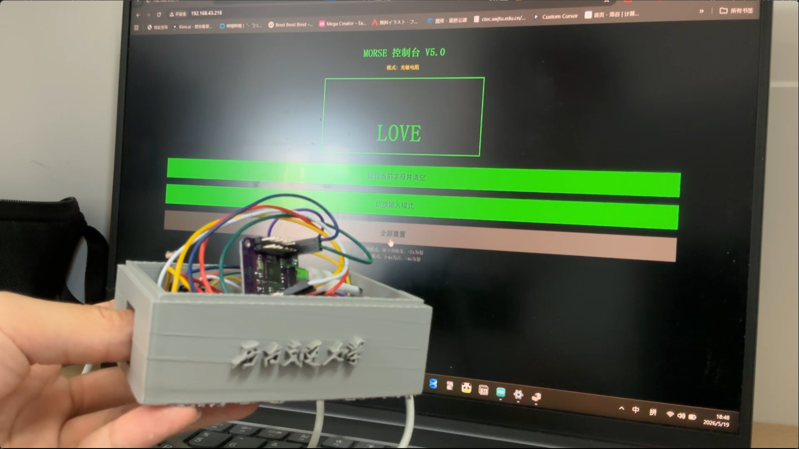
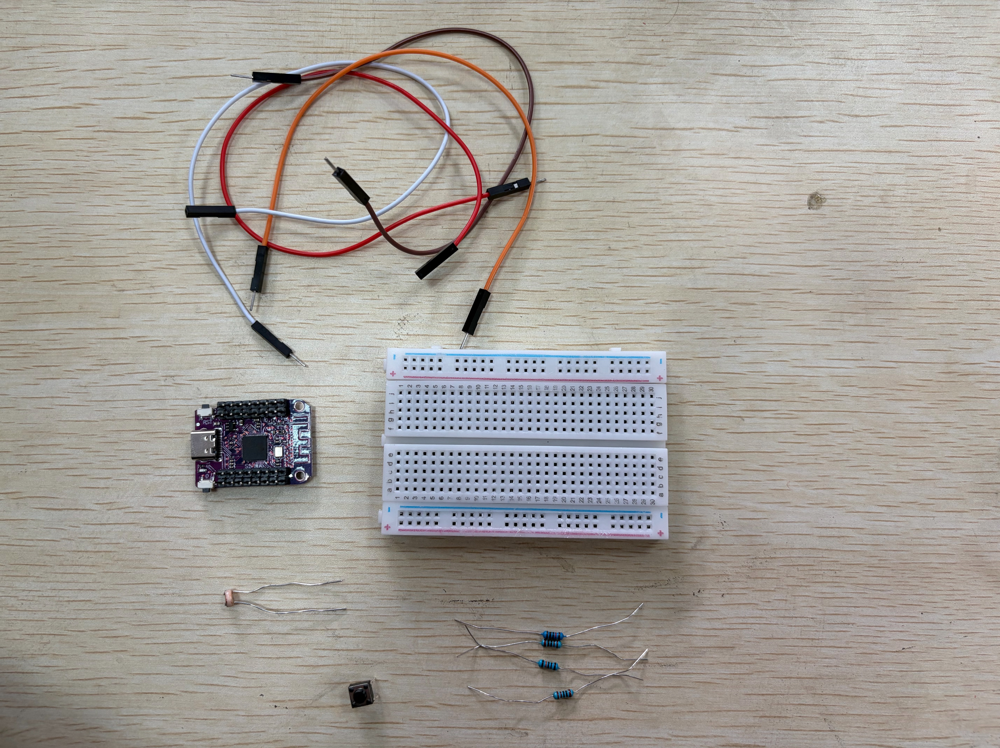
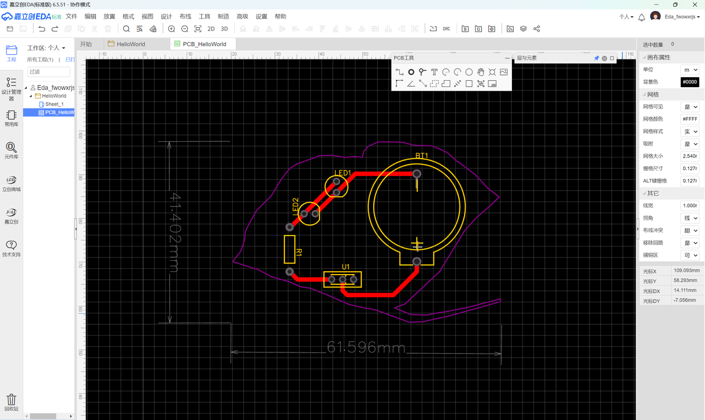
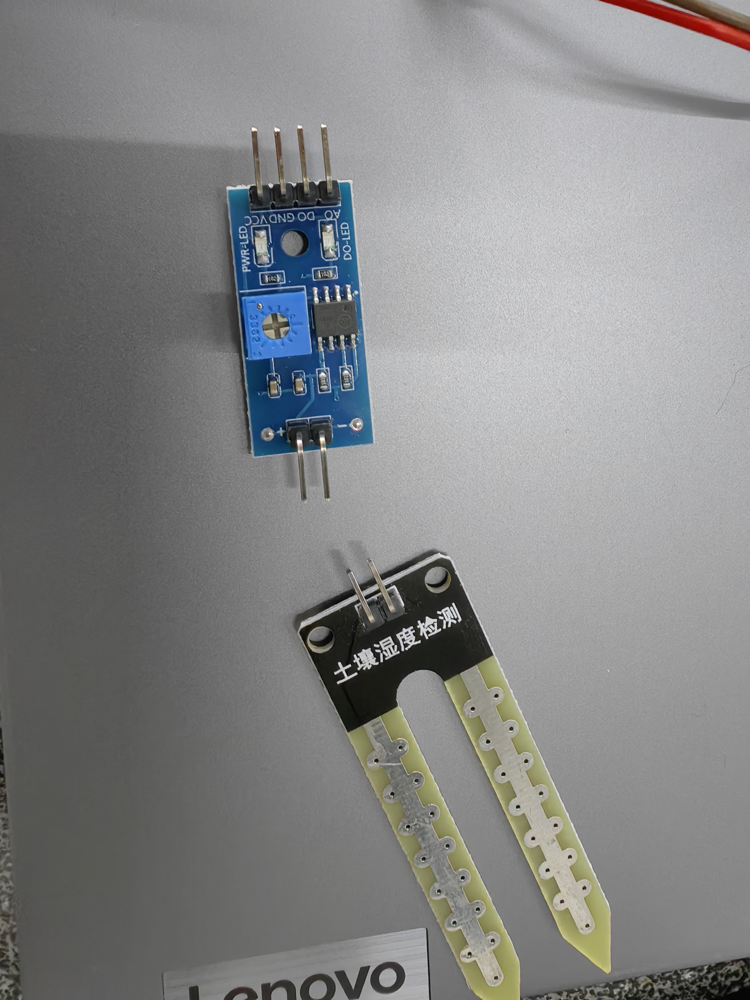
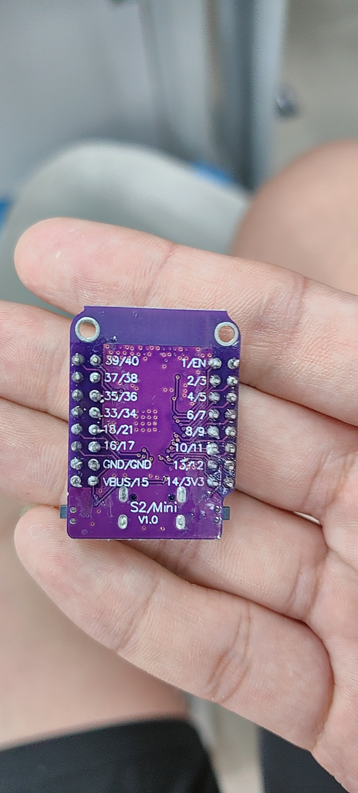
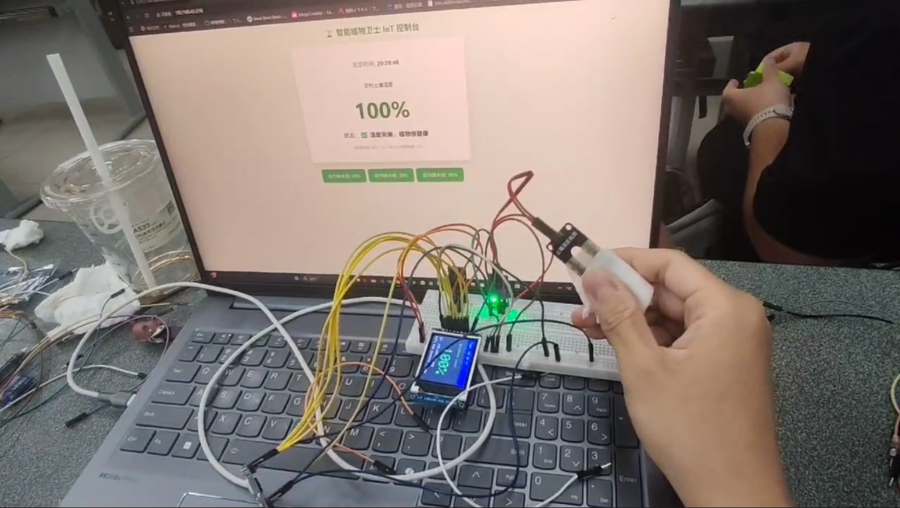
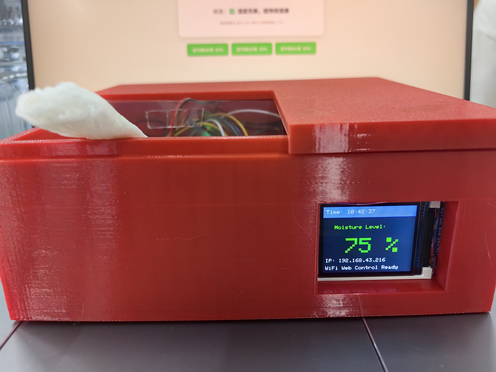

THE MAKER'S DOSSIER
从代码到实物：课程日志
- COURSE PROJECT RECORD -
01 // 个人简介
姓名： 黄新雄
专业： 计算机科学与技术
学校： 西南交通大学
简述： 本日志完整记录了在《从代码到实物》课程中，从理论学习、软硬件结合测试，到最终完成实物项目的全过程。
02 // 什么是创客
创客（Maker）是一群热衷于将创意转化为现实的人，强调“动手实践”、“知识共享”与“跨界融合”。
在数字时代，我们不再局限于软件开发，而是利用 3D 打印机、激光切割、开源硬件（如 ESP32 系列开发板）以及代码逻辑，去创造能够感知和影响真实世界的物理实体。创客精神的核心就是不断试错并解决实际问题。
03 // Git 协作记录
为了保证项目代码和文档的版本迭代可追溯，我在本地建立文件夹后，使用 Git 工具将其初始化为本地仓库，并推送到远端的 Gitee 与 GitHub。
具体操作：
- 在终端使用
git init初始化项目文件夹。 - 每次修改完代码或更新完 HTML 日志后，使用
git add .将改动存入暂存区。 - 使用
git commit -m "更新说明"提交版本说明。 - 通过配置 Remote 远程地址，使用
git push将内容同步更新至云端仓库。
04 // 3D建模与打印
项目：致敬交大130周年校门复刻
操作过程：
- 建模阶段： 使用 SOLIDWORKS 软件根据真实比例对校门进行三维建模，重点处理了内部拱门的镂空与底部的支撑结构设计，并导出为 STL 格式文件。
- 切片与打印： 将模型导入拓竹切片软件（Bambu Studio），设置合理的层高、支撑生成策略和填充密度。随后通过网络发送至拓竹 A1 mini 打印机进行实际打印。
- 后处理： 打印完成后，小心拆除模型底部的支撑材料，完成最终的实物打卡。


05 // 电子焊接实验
操作过程：
本次实验目的是完成一块 LED 闪灯电路板的焊接。首先预热电烙铁，将 IC 底座、LED 指示灯、色环电阻与电容依次插入 PCB 板对应孔位。使用烙铁头同时加热焊盘与引脚，送入焊锡丝形成标准的圆锥形焊点，冷却后使用斜口钳剪去多余引脚，最后通电测试电路是否连通。


06 // 嵌入式计算测试
在熟练使用面包板的基础上，利用 ESP32 微控制器进行了以下一系列输入/输出实验：
测试 01: HelloWorld (串口通讯)
void setup() { Serial.begin(9600); }
void loop() {
Serial.println("hello world");
delay(500);
}
测试 02: 数字输出 (LED指令)

测试 03: 数字输入 (按键状态检测)


测试 04: 模拟输出 (PWM 脉宽调制)

测试 05: 模拟输入 (光线侦测)

测试 06: 无线局域网控制 (Web Server)


07 // 中期创客项目：复古光学摩斯密码机 V5.0
项目简介：
基于 ESP32 主控，整合了光敏侦测与机械按键双路输入的摩斯密码解析系统，并在本地建立 Web Server，实现了实体敲击与网页端数据显示的交互互通。
团队成员与分工
- 黄新雄： 负责整体硬件电路设计与连线、核心解析逻辑与 Web Server 网页端代码的编写、软硬件系统联调、除虫（Debug）以及最终的硬件物理封装。
- 邓童： 负责项目外壳的 3D 建模设计与切片打印工作。
团队合作过程
在本次项目中，我们采用了“软硬解耦、并行推进”的协作模式。前期，邓童根据我提供的光敏电阻、按键和主控板的物理尺寸清单，率先开始 3D 外壳的建模与试打印工作，为项目提供结构支持；同时，我（黄新雄）全面接手并独立完成了面包板分压电路的搭建和底层通信代码的编写。3D 外壳打印交付后，由黄新雄负责进行硬件部件的严密嵌入与内部复杂排线的梳理固定。在最终联调阶段，面对自然光线干扰导致误触发的棘手问题，我通过在代码端反复调优防抖延时参数，配合物理遮光罩的结构，独立完成了软件算法与实体硬件的完美适配。
项目开发成果与问题解决过程
- 成果展示：
成功打造了一台具备复古工业风外观的“双模光学摩斯密码机”。设备不仅能精准捕获长短按键和光照遮挡信号，还能将摩斯密码无延迟地解析为对应字母，并通过局域网实时推送到手机或电脑的 Web
控制台上，实现了物理世界交互与数字世界UI的彻底打通。

Fig.24 摩斯密码机 Web 控制台与双模硬件联调成品 - 问题 1：硬件
delay()导致的网页卡顿断连。
排查与解决： 初期我们习惯使用delay()函数进行按键防抖和长短按时长的识别，但实测发现，这会导致单片机主线程阻塞，Web Server 无法及时响应前端的 HTTP 请求。最终果断重构代码，全面引入millis()时间戳记录机制，通过计算动作前后的差值，实现了非阻塞式的状态机轮询。 - 问题 2：环境自然光线干扰导致误判。
排查与解决： 教室内的自然光变化以及人员走动的阴影，极易导致光敏电阻的 AD 值发生漂移，产生“幽灵输入”。解决方案是在 3D 外壳设计上增加了“深桶型遮光罩”结构，从物理层面有效屏蔽侧边散射光；同时在代码中增加了 50ms 的软件消抖逻辑，并调优了LIGHT_THRESHOLD的触发临界点。
材料归还记录
项目结题，已安全归还以下实验耗材：
- 1. 杜邦线若干
- 2. 面包板 * 1
- 3. 光敏电阻 * 1
- 4. 电阻 * 4，机械按钮 * 1
- 5. ESP32 主控芯片 * 1

项目实物展示


系统核心源代码解析
为保证 Web Server 的高并发响应能力，本项目彻底摒弃了传统的 delay() 阻塞延时，核心采用了基于 millis()
的异步时间戳状态机。以下为双模（光敏/按键）信号捕获与解析的核心逻辑片段：
// 核心逻辑：基于 millis() 的非阻塞双模时间差计算
void loop() {
server.handleClient(); // 优先处理网页端请求，保证通信不卡顿
// 状态轮询：根据当前模式动态读取对应的物理输入（按键低电平触发 / 光敏突破高阈值触发）
bool triggered = buttonMode ? (digitalRead(BUTTON_PIN) == LOW) : (analogRead(LDR_PIN) >= LIGHT_THRESHOLD);
// 状态机：捕获信号下降沿（触发瞬间）
if (triggered && !isActive) {
startTime = millis(); // 记录起始时间戳
isActive = true;
digitalWrite(LED_PIN, HIGH); // 开启指示灯反馈
}
// 状态机：捕获信号上升沿（松开瞬间）
if (!triggered && isActive) {
unsigned long dur = millis() - startTime; // 计算信号持续的绝对时长
isActive = false;
digitalWrite(LED_PIN, LOW);
// 逻辑判定树：根据不同模式的长短时长，解析为摩斯密码的点和划
if (buttonMode) {
if (dur >= BTN_DASH_TIME) morseBuffer += "-";
else if (dur > 50) morseBuffer += "."; // 引入 50ms 软件消抖机制滤除毛刺
} else {
if (dur >= LDR_DASH_MIN) morseBuffer += "-";
else if (dur >= LDR_DOT_MIN) morseBuffer += ".";
}
Serial.println("当前缓冲区解析: " + morseBuffer);
}
}实验总结与反思
本次中期项目完成了从零散电子元器件到完整交互物理硬件的跨越。通过软硬件结合，我们不仅验证了基于 ESP32 的模拟与数字双模信号采集的可行性，更在实战中深刻理解了“状态机”在非阻塞式物联网系统中的核心地位。在团队紧密协作下，我们成功克服了自然光干扰、物理电平毛刺与通信阻塞等一系列技术瓶颈，最终达到了预期的双端交互指标。
后续改进迭代方向
- 1. 通信协议升级： 目前网页端采用的是每 500ms 刷新一次的轮询（Polling）机制，偶有延迟。未来可将其改造为 WebSocket 双向通信，实现物理按键敲击与网页端字符毫秒级的零延迟同步推送。
- 2. 硬件结构优化： 现有的按键手感偏软，后续可通过 3D 打印设计更精密的机械杠杆与弹簧传动结构，完美复刻真实的电报机回弹手感，提升实体交互体验。
- 3. 离线解码与扩展： 在代码中内置更庞大的摩斯密码与中英文字符映射字典（如引入字典树结构提升检索效率），并在硬件端增设 OLED 屏幕，实现脱离局域网网页端的独立离线解密与显示。
08 // PCB 电路板设计
依托嘉立创 EDA 工具，进行了标准化印制电路板（PCB）的全流程设计。
项目一：校庆 LED 电子徽章
操作过程： 结合 AI 提取出的西南交大“银杏叶”轮廓，导入 EDA 软件作为板框。布置 LED 和电阻元件，设置走线宽度为 1mm，并在布线时全部采用标准的 45° 倒角，最后生成 3D 预览效果。


项目二：TP4056 锂电池充电管理模块
操作过程：
1. 查阅手册： 阅读 TP4056 芯片数据手册，明确各管脚定义及外围电容电阻的选型参数。
2. 原理图绘制： 放置芯片、电阻、电容及 Mini-USB 接口，使用网络标签（如 VCC, GND, BAT）连接线路。
3. PCB 布局布线： 将原理图转为 PCB，合理放置元器件位置，对电源线进行加宽处理，并在顶层与底层铺设 GND 覆铜（泪滴处理）。
4. 规则检查： 运行 DRC（设计规则检查）确保无短路断路，最终导出可生产的 Gerber 文件。


09 // 设计思维 (Design Thinking)
在硬件项目的开发中，设计思维指导了我们的完整流程：
- Empathize (共情)： 从实际需求出发，明确需要解决什么问题。
- Define (定义)： 锁定技术难点（如按键抖动、光线干扰）。
- Ideate (构思)： 提出解决方案，比如在代码中加入基于时间的阈值过滤算法。
- Prototype (原型)： 使用面包板或 3D 打印机快速制作粗略版本验证可行性。
- Test (测试)： 软硬联调，不断根据输出结果修正代码逻辑。
10 // 期末创新项目：智能土壤湿度监测系统 / 智能植物卫士 IoT 控制台
项目名称：智能土壤湿度监测系统
一句话定义：基于 ESP32 开发板搭建智能土壤湿度监测设备，通过土壤湿度传感器采集数据，湿度偏低时蜂鸣器声光报警，TFT 彩屏实时展示数值与设备状态，并搭配手机网页实现远程查看、参数设置与报警关闭。
应用场景：家庭绿植养护、阳台盆栽管理、农田简易监测、校园植物实训、室内园艺照料。
产品亮点：硬件搭建简单、数据采集直观、支持远程网页操控、阈值可自定义调节、声光提醒及时、低成本易复刻。
团队成员与分工
- 李露（软件/代码）：主代码编写、串口调试、系统集成、文档编写
- 黄新雄（硬件/电路）：杜邦线接线、电路调试、焊接、分压电路
- 李瑛琪（3D建模）：Fusion 360 外壳设计、Bambu Lab 打印、组装
- 刘知行（测试/文档）：功能测试、演示准备、物料协调、拍照记录
- 唐宇涵（组装/调试）：外壳组装、热熔胶固定、走线理线、现场演示
团队合作过程
本项目在 48 小时的极限开发中，全队采取了高度紧密的“软-硬-拓扑结构-集成测试”敏捷开发流水线。 首先由负责电路的 黄新雄 精确测算各硬件外设的电学参数，并将主控、探头与彩屏的物理公差尺寸第一时间同步给 李瑛琪 开展 Fusion 360 的外壳精细建模； 在此期间，负责软件的 李露 开展全链路的代码架构搭建，与 黄新雄 进行底层驱动的联合把脉。 外壳在拓竹 A1 mini 打印期间，刘知行 与 唐宇涵 协同开展多轮模块级的冒烟测试，详尽记录数据跳变日志，并协助 黄新雄 进行焊接与分压。 最终外壳交付后，由 唐宇涵 主导硬件总装与热熔胶固线，全队在答辩现场紧密配合，完美呈现了软硬一体化的路演效果。
项目开发成果与问题解决过程
- 技术成果： 成功研制出具备高度工业完整度的桌面级 IoT 植物养护设备。系统实现了高精度的土壤模拟量标定与映射，在物理端通过 1.8 寸 TFT 屏构建了层次清晰的图形 UI，在云端搭建了每 3 秒自动轮询的专属 Web Server 控制面板，支持远程一键消警与动态阈值重载，实测综合响应时延小于 150ms。
- 硬核战役 1：智能称重水杯垫方案的数据漂移与断然 Pivot（换题）
问题描述： 项目第一阶段原本计划制作基于 HX711 称重模块的压力应力智能杯垫。但在联调时发现，由于应力铝条物理悬空结构的蠕变特性、环境微弱气流噪声以及 ADC 高频采样的阶跃抖动，导致裸数据原码发生严重漂移，去抖动平均滤波算法亦无法根除误判。
解决过程： 面对可能导致答辩失败的重大风险，全队迅速召开緊急会议，果断推翻原有物理架构进行 Pivot（方向转向）。利用现有的 ESP32 算力资源，紧急切入阻性土壤湿度传感器方案，重构为智能植物卫士，在数小时内完成了技术栈的彻底迁移，化险为夷。 - 硬核战役 2：Strapping Pins（启动引脚）死穴导致的无限重启
问题描述： 在更换为湿度方案并接入彩屏后，主板一通电就疯狂弹红字死机，提示invalid magic number并不停抽搐重启。
解决过程： 黄新雄 与 李露 连夜查阅 ESP32 芯片技术手册，定位到真凶：彩屏的DC引脚不小心接在了核心控制芯片的GPIO 2上。GPIO 2属于芯片的 Strapping 引脚，开机瞬间其电平直接决定主板进入工作模式还是下载模式。彩屏内部的弱下拉电阻破坏了开机电平，导致芯片装死。全队立刻进行引脚重新洗牌，将数据线迁移至安全的非控制引脚，问题彻底解决。
硬件清单
| 组件 | 型号 / 说明 | 数量 |
|---|---|---|
| 主控板 | ESP32-C3 SuperMini / ESP32-S2 Mini | 1 |
| TFT 彩屏 | ST7735 1.8寸 SPI 彩屏 | 1 |
| 土壤湿度传感器 | 阻性土壤湿度传感器，模拟量输出 | 1 |
| 蜂鸣器 | 有源 / 无源蜂鸣器 | 1 |
| 杜邦线 | 母对公 / 公对公 | 若干 |
| 数据线 | USB-C / Micro-USB | 1 |
| 3D 打印外壳 | Fusion 360 建模，Bambu Lab 打印 | 1 |
引脚分配表
| 元件 | 引脚 | ESP32-C3 对应 GPIO | 说明 |
|---|---|---|---|
| ST7735 TFT 彩屏 | VCC | 5V / VIN | 彩屏供电 |
| ST7735 TFT 彩屏 | GND | GND | 共地 |
| ST7735 TFT 彩屏 | CS | GPIO 1 | 片选信号 |
| ST7735 TFT 彩屏 | DC | GPIO 2 | 数据 / 命令选择 |
| ST7735 TFT 彩屏 | RST | GPIO 3 | 复位 |
| ST7735 TFT 彩屏 | SCLK | GPIO 6 | 软件 SPI 时钟 |
| ST7735 TFT 彩屏 | MOSI | GPIO 7 | 软件 SPI 数据 |
| 土壤湿度传感器 | AO | GPIO 0 | 模拟量输入 |
| 蜂鸣器 | + | GPIO 10 | 报警输出 |
| 蜂鸣器 | - | GND | 共地 |
接线要点
- 直连方式：所有外设与主控板尽量采用母对公杜邦线直接连接，减少面包板接触不良带来的故障。
- 蜂鸣器防护：如果使用无源蜂鸣器，需要串联 220Ω 左右限流电阻，避免 GPIO 引脚过流损坏。
- 供电要求：TFT 彩屏和土壤湿度传感器优先使用 5V / VIN 供电，3.3V 供电时可能出现屏幕异常或传感器读数不稳定。
- 共地规范：所有模块的 GND 必须与 ESP32 共地，否则容易出现信号漂移、读数紊乱、屏幕异常等问题。
- SPI 总线：彩屏的 SCLK、MOSI、CS、DC、RST 必须严格按照代码定义接线，接错会导致屏幕黑屏或初始化失败。
- 传感器布线：土壤湿度传感器模拟输出线尽量远离蜂鸣器、电源线和高频信号线，以减少电磁干扰。
环境配置步骤
- 安装 Arduino IDE 2.x 版本。
- 打开「文件 → 首选项」，填入 ESP32 附加开发板管理器网址。
- 进入「工具 → 开发板 → 开发板管理器」，搜索
esp32，安装 ESP32 Arduino 平台包。 - 在「工具 → 开发板」中选择
ESP32C3 Dev Module或对应的 ESP32-S2 Mini 开发板。 - 在「工具 → Port toggle」中选择设备对应串口。
- 打开库管理器，安装依赖库：
Adafruit ST7735 and ST7789 Library、Adafruit GFX Library、WebServer。
上传代码方法
ESP32-C3 / ESP32-S2 在上传失败或卡在 Connecting... 时，可以手动进入下载模式：
- 按住开发板上的
BOOT键。 - 点击 Arduino IDE 的上传按钮。
- 等待出现
Connecting...或进度条开始移动。 - 松开
BOOT键，等待代码上传完成。
具体操作过程（Design Log）
周六 10:00｜项目启动 & 硬件清点： 团队成员集合后领取 ESP32 主控板、土壤湿度传感器、ST7735 彩屏、蜂鸣器、杜邦线等物料。结合家庭绿植缺水提醒的使用场景，确定开发“智能土壤湿度监测系统”，核心功能包括湿度采集、蜂鸣报警、屏幕显示、网页远程控制。
周六 10:30｜分工确认 & 方案细化： 明确软件开发、硬件接线、3D 建模、功能测试、整机组装五大板块。系统逻辑确定为：传感器采集土壤湿度 → 主控处理并换算百分比 → TFT 屏幕实时刷新 → 低于阈值触发蜂鸣器报警 → 手机网页查看数据、修改阈值、关闭报警。
周六 11:20｜踩坑 1：传感器读数固定不变： 完成接线后，土壤湿度传感器数值一直保持固定值，探头接触水或土壤后没有变化。排查 VCC、GND、AO 接线无误后，分别使用 3.3V 与 5V 供电测试，问题依旧。最终发现是传感器探头内部线路损坏，更换新传感器后数据恢复正常。
周六 13:10｜踩坑 2：TFT 彩屏黑屏无法启动： 彩屏接线完成后上电全程黑屏，无任何文字显示。我们先检查 CS、DC、RST、SCLK、MOSI 等 SPI 引脚，再更换库文件和初始化参数，仍然无法解决。后续判断是硬件 SPI 引脚存在兼容性问题，改用软件 SPI 后屏幕成功点亮。
周六 14:50｜踩坑 3：湿度数据波动跳变： 传感器放在同一土壤环境中，原始 AD 值频繁跳动，湿度百分比也随之波动，导致蜂鸣器误报警。解决方案是在硬件上增加滤波电容，在代码中加入多次采样平均与防抖逻辑，减少瞬时噪声对判断结果的影响。
周六 16:40｜踩坑 4：手机无法访问网页端： ESP32 已经成功连接 WiFi，串口和屏幕也能显示 IP 地址，但手机浏览器无法打开控制网页。排查后发现手机与开发板虽然在同一 WiFi 下，但路由器开启了 AP 隔离功能，导致局域网设备之间无法互访。关闭 AP 隔离后网页正常访问。
周六 18:20｜功能联调 & 逻辑优化： 完成硬件与软件联调，重新校准干燥和湿润状态下的 AD 数值，修正湿度百分比换算公式；优化蜂鸣器报警节奏为间断鸣响，降低噪音；网页端增加阈值选择按钮、报警关闭按钮、实时数据展示；TFT 屏幕分区展示时间、湿度、状态和 IP 地址。
周六 21:10｜项目收尾 & 文档整理： 对整机进行长时间稳定性测试，确认屏幕显示、网页访问、蜂鸣报警、阈值设置、静音控制均能稳定运行。随后整理接线图、开发过程、问题排查记录和项目展示资料，完成最终路演准备。
周日 10:00｜3D外壳封装与硬件固化： 进入最终的实物装配阶段。拿到连夜打印完成的红色定制外壳后，我们将面包板、ESP32 主控和复杂的杜邦线小心翼翼地归拢并塞入内部底座。为了防止下午路演搬运时接线松动导致功亏一篑，我们对关键的 SPI 和 I2C 引脚节点进行了理线，并用胶带和热熔胶对 TFT 屏幕开窗处及电源接口进行了物理加固，整个作品的“产品感”瞬间成型。
周日 11:30｜路演彩排与双端极限测试： 在装盒完成后进行最后一次全流程演练。我们准备了湿纸巾包裹传感器探头，用来模拟刚刚浇过水的湿润土壤环境。在抽离湿纸巾的瞬间，TFT 屏幕无延迟切换为红色“NEED WATER”警告，蜂鸣器准时响起，同时手机 Web 控制台也精准实现了数据同步与标红预警。团队对照着演示流程进行了分工串词，确保能流畅解答架构选型和代码逻辑。
周日 14:30 - 17:00｜期末创新项目验收与答辩： 项目迎来最终的验收时刻！在演示环节，我们向评委完整展示了“智能植物卫士”从硬件传感、边缘计算到局域网 IoT 控制的完整闭环。现场实测环节中，无论是模拟缺水的秒级报警，还是网页端的“强制静音”和“动态修改 20%/30%/50% 报警线”功能，均完美触发，全程未出现任何死机或断连情况。项目的高完成度与精美的 UI 呈现获得了认可，本次创客挑战圆满收官！
项目实物与调试记录





最终成品展示




涉及知识点
| 类别 | 知识点 |
|---|---|
| 传感器 | 土壤湿度传感器模拟量读取、AD 采样、干湿校准、滑动平均滤波、数据稳定性优化 |
| 嵌入式 | ESP32 GPIO 配置、ADC 输入、SPI / 软件 SPI 驱动、WiFi 网络连接、NTP 时间同步 |
| 电路 | 蜂鸣器限流保护、模块供电规范、GND 共地、杜邦线直连与接触不良排查 |
| 编程 | 状态机逻辑设计、定时刷新、WebServer 网页交互、串口调试与日志输出 |
| 3D 打印 | Fusion 360 外壳建模、Bambu Studio 切片、PLA 材料特性与组装公差设计 |
| 工程实践 | 快速原型迭代、硬件调试排错、团队协作分工、项目文档整理与演示准备 |
常见问题排查
| 问题 | 可能原因 | 解决方案 |
|---|---|---|
| 上传代码卡在 Connecting... | ESP32 未进入下载模式 | 按住 BOOT 键 → 点击上传 → 等待连接 → 松开 BOOT |
| 串口乱码 | 波特率不匹配 | 串口监视器波特率设为 115200 |
| 湿度数据跳动严重 | 电磁干扰、接线接触不良、模拟信号不稳定 | 增加滤波电容、代码多次采样取平均、重新固定接线 |
| TFT 彩屏黑屏 | SPI 引脚接错、供电不足、库配置错误 | 核对 CS/DC/RST/SCK/MOSI，改用 5V 供电，检查初始化参数 |
| 蜂鸣器不响 | 接线反接、限流电阻过大、GPIO 定义错误 | 检查极性，核对代码引脚，必要时降低限流电阻 |
| 网页无法访问 | WiFi 连接失败、手机不在同一局域网、路由器开启 AP 隔离 | 检查 WiFi 账号密码，关闭 AP 隔离，或改用手机热点测试 |
| 外壳无法组装 | 3D 建模尺寸偏差或公差不足 | 重新测量实物尺寸，每边预留约 1mm 装配余量 |
系统核心源代码解析
由于工程全量代码较长，此处精选解构两个最核心的嵌入式算法片段：
1. 基于异步时间戳的非阻塞声光警报状态机
为保证 Web 服务器的高动态响应，主循环彻底杜绝了阻塞式的 delay() 函数。通过 millis()
间接计算节拍，实现了在处理网页请求的同时，让蜂鸣器以 300ms
为周期平滑闪烁断续鸣叫。
// 计算当前是否需要触发报警状态机
bool shouldAlarm = (currentMoisture < alarmThreshold) && !isMuted;
if (shouldAlarm) {
// 利用非阻塞时间戳实现每 300ms 高低电平动态翻转
if ((millis() / 300) % 2 == 0) {
digitalWrite(BEEP_PIN, BEEP_ON);
} else {
digitalWrite(BEEP_PIN, BEEP_OFF);
}
} else {
digitalWrite(BEEP_PIN, BEEP_OFF); // 恢复安全水位或手动静音时关闭蜂鸣器
}2. TFT彩屏防闪烁局部像素重绘算法
传统的 fillScreen(BLACK) 全屏擦除会导致背光高频闪烁，产生严重的撕裂感。本算法在数据刷新时，首先用 fillRect
仅对文本区域进行局部精准覆盖，随后利用带背景色的 tft.setTextColor(COLOR, BACKGROUND) 打印字符，使新数字自动吞噬旧残影，完美实现 0 闪烁。
if (millis() - lastScreenUpdate > 500) {
lastScreenUpdate = millis();
// 局部刷屏优化：只擦除包含 NEED WATER / Moisture Level 的这一行矩形带
tft.fillRect(0, 30, 160, 20, ST77XX_BLACK);
if (currentMoisture < alarmThreshold) {
tft.setTextColor(ST77XX_RED);
tft.print("NEED WATER!");
} else {
tft.setTextColor(ST77XX_GREEN);
tft.print("Moisture Level:");
}
// 自动用黑色背景色覆盖文字间隙，彻底消灭前一个数值的数字残影
char moistureStr[10];
sprintf(moistureStr, "%-3d%%", currentMoisture);
tft.setTextColor(currentMoisture < alarmThreshold ? ST77XX_RED : ST77XX_GREEN, ST77XX_BLACK);
tft.print(moistureStr);
}材料归还记录
已归还：归还清单：
- 1. 土壤湿度传感器 * 1
- 2. OLED TFT液晶屏幕 * 1
- 3. HX711称重 应力 * 1
- 4. ESP32C3芯片 * 1
- 5. 杜邦线若干
- 6. 面包板 * 1
自费材料留存说明：
- 有源蜂鸣器 * 1

项目总结与反思
本次期末创新项目完整经历了“需求分析 — 原型搭建 — 代码开发 — 硬件调试 — 外壳设计 — 功能演示”的流程。 相比前期单独的传感器或 Web Server 实验，本项目将模拟输入、数字输出、WiFi 通信、网页前端、TFT 显示和报警逻辑整合到一个完整系统中。 最终作品不仅实现了实时监测、网页远控和蜂鸣报警，也通过 3D 打印外壳提升了作品完整度和展示效果。
做得好的地方
- 两天内完成方案设计、硬件接线、代码开发、3D 打印、功能联调和路演准备，整体推进效率较高。
- 团队分工明确，软件、硬件、建模、测试、组装各部分都有对应负责人。
- 踩坑记录较完整，传感器损坏、屏幕黑屏、数据跳变、网页访问失败等问题均形成了可复用的排错经验。
可改进的地方
- 引脚规划应更早完成，提前查阅 ESP32-C3 / ESP32-S2 的特殊启动引脚，避免临时更换接线。
- 关键元件需要准备冗余备件，例如蜂鸣器、传感器和彩屏，防止硬件损坏拖慢进度。
- 外壳建模前应先精确测量所有元件尺寸，并预留装配公差，减少返工。
- 3D 打印任务可以提前排队和切片，减少等待时间。
未来扩展方向
- 增加 OLED / 更大尺寸屏幕，显示湿度、环境温湿度、设备运行时长和报警阈值。
- 优化提醒机制，根据缺水程度动态调整蜂鸣器频率，并加入状态指示灯。
- 增加蓝牙或 APP 功能，保存历史湿度数据并生成植物养护统计报表。
- 升级为锂电池供电，摆脱 USB 线限制，提高摆放灵活性。
- 增加自动浇灌模块，外接水泵与电磁阀，实现缺水自动浇水。
- 拓展环境监测，加入温湿度、光照等传感器，构建更完整的植物养护系统。